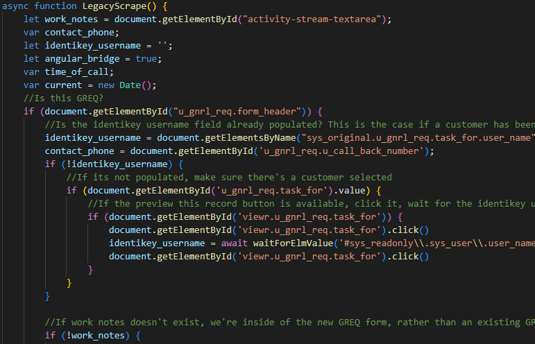
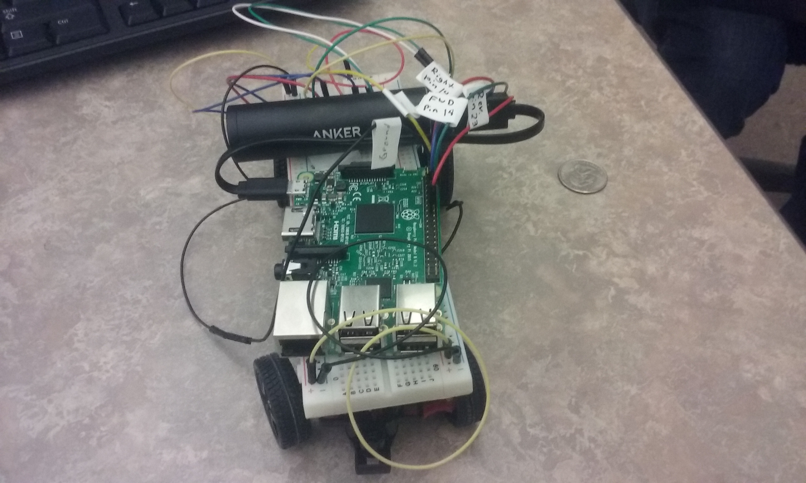

-
LDAP Scraper
During my time at the ITSC, I worked on the LDAP scraper, which was a tool that scraped information from CUs backend, and then pasted that information into serviceNow. This tool embedded buttons into the UI, and was able to take data and paste it into a variety of different text boxes.
Work and Academics!
Here you can find some of my work experience, as well as some information on Legacy 2000, a STEM based program at Legacy High School.
Some of these were worked on alone, others were worked on in group projects during my time at CU Boulder and Legacy High School!
Helped affiliates of CU Boulder daily with issues ranging from hardware to software, both over the phone and in emails. Assisted affiliates reset passwords to accounts, verified identities, troubleshoot hardware, and escalate issues. Managed internal documentation of procedures and processes to ensure fast response time. Wrote and managed support tickets. For IAM: Escalated support for accounts and services managed by CU Boulder. Daily tasks to design develop, enhance and maintain applications, using business analytics, requirements gathering, and creativity within an agile DevOps team. Attended daily standups with team to document progress on assigned tickets. Designed and developed applications using a variety of programming languages. Managed Rest interface and API development. Asynchronous workflow strategies using Kafka and RabbitMQ. SQL development. Interface/Integration development, including web applications. Documentation including API calls. Fixes and Incident Remediation.
Legacy 2000
More about Legacy 2000!
This is a compilation of my works in Legacy 2000, which is a program designed to challenge students with a passion for math, science, and/or technology by encouraging students to research ideas, develop ideas, and implement those ideas into reality. Students are held to a college level of standards, including 10+ page research papers due every three weeks, professional speeches, group projects, RnD, and more.
-
Self Driving RC Car
Made in my Sophomore year. This was a group project where we made a self driving RC car capable of following a black line, and stopping before it runs into objects. Coded in Python. View on Google Drive
Python RaspberryPi -
Grade Calculator
A two part program. The GUI, when numbers are entered into the empty boxes and save is clicked, saves these numbers into a text file in a certain format (that mimicks the format of the GUI.) This format is able to be read by the 'Calc.Py' program, and then it exports the values into the 'Complete.txt' text file. The 'CompleteSlim.txt' file takes unrealistic values (like a -20% on a test) and removes them.
Python TKinter

Internship conducted at Google during high school. Contributed to an open source project called xPSDesiredStateConfiguration. Attended daily in person meetings with the team at Google to discuss contributions, roadblocks, and more.
-
xPSDesiredStateConfiguration
Done during my junior and senior year in high school. Worked on DSC. Modifying scripts that would add users to the Google internal network, and assign these users specific permissions or roles within that network. Attempted to fix the backend of the program to use SID’s rather than display IDs to resolve conflicting display ID situations.
Powershell Open Source VM